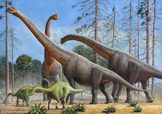

Зауроподы
Завроподы, или зауроподы, или ящероногие (лат. Sauropoda, буквально — «ящероногие» динозавры), — большая группа четвероногих растительноядных динозавров из отряда ящеротазовых, обитавших с конца триасового по меловой периоды (около 210—66 миллионов лет назад) на всех материках, включая Антарктиду.
Отличительными особенностями их тела были очень длинная шея, длинные хвосты, маленькие головы (по отношению к остальной части их тела) и четыре массивные столбообразные конечности, которые похожи на таковые у современных слонов. Некоторые виды завропод в процессе эволюции достигли огромных размеров. В эту группу входят самые крупные животные, которые когда-либо жили на суше, с массой тела более 60 тонн. Гигантизм подвёл данную группу к физиологически возможным пределам строения организма для наземных позвоночных, что сделало их крупнейшими наземными животными в истории Земли. В животном мире лишь немногие виды китов обладают ещё большей массой тела.
Завроподы впервые появились в конце триасового периода. К поздней юре (150 миллионов лет назад) завроподы стали широко распространёнными на территории суши животными (особенно диплодоциды и брахиозавриды). В конце мела эти группы были в основном заменены титанозаврами, которые имели почти глобальное распространение. Как и в случае с другими средними и крупными животными, титанозавры вымерли в процессе мел-палеогенового вымирания. В то время как ранние двуногие завроподоморфы, вероятно, были способны быстро выслеживать добычу, более поздняя эволюционная история группы характеризуется увеличением размера тела, сопровождающимся растительноядностью, экстремальным удлинением шеи и четвероногим способом передвижения.
Название завроподы было впервые предложено Отниелем Чарлзом Маршем в 1878 год. Весь период их изучения отличался обсуждением вопроса классификации группы. На сегодняшний день систематика завропод вызывает споры, а филогенетические анализы различных авторов во многом разнятся. Они были одной из самых разнообразных и распространенных групп растительноядных динозавров. С более чем 150 достоверно признанными видами завроподы являются второй по разнообразию группой динозавров. Однако полные скелеты завропод известны только у пяти родов. Многие виды, особенно самые крупные, известны только из изолированных и вычлененных костей. У многих почти завершенных образцов отсутствуют головы, кончики хвоста и конечности. Самый крупный завропод титанозавр бравипароп известен и описан на основании ихнофоссилий (отпечатков ног в виде вереницы следов).
Завроподы — одна из самых узнаваемых групп динозавров. Они стали неотъемлемой частью массовой культуры благодаря своим внушительным размерам, появляясь во многих документальных и художественных фильмах. Наиболее известными представителями завропод являются диплодоки, брахиозавры, апатозавры и бронтозавры.
Классификация зауроподов
- Брахиозавриды
- Камаразавриды
- Эвгелоподы
- Цетиозавриды
- Эвгелоподы
- Диплодоциды
- Дикреозавры
- Титанозавриды